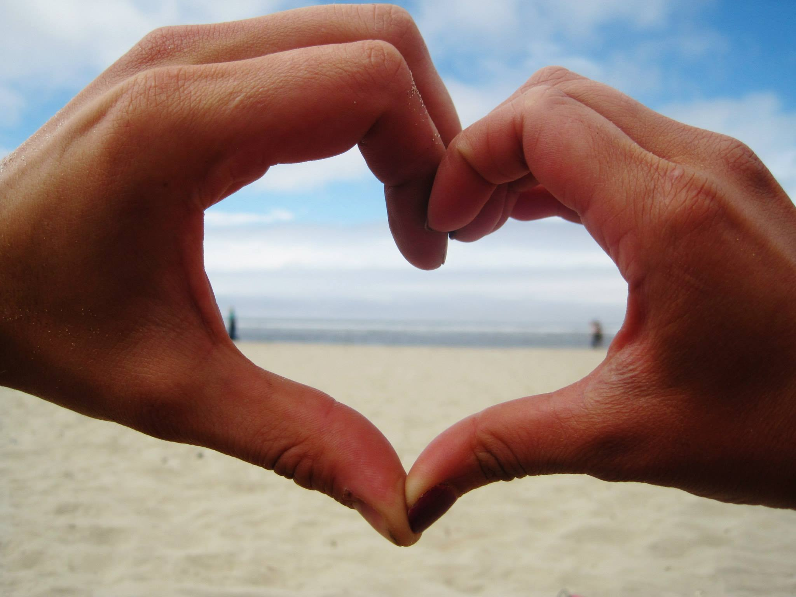
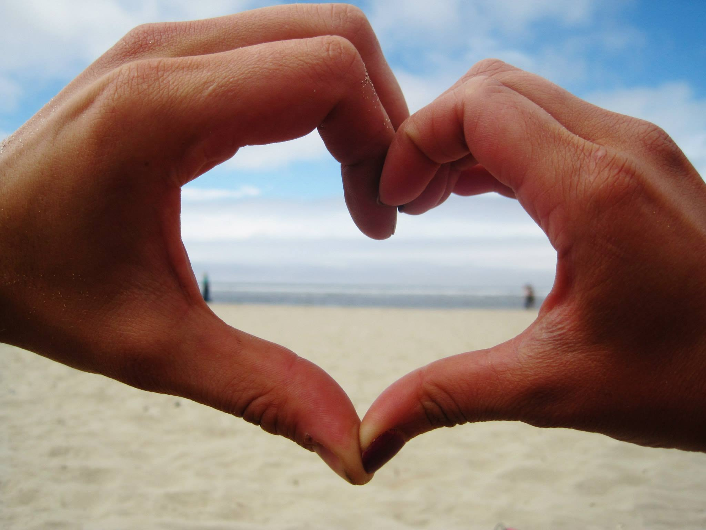
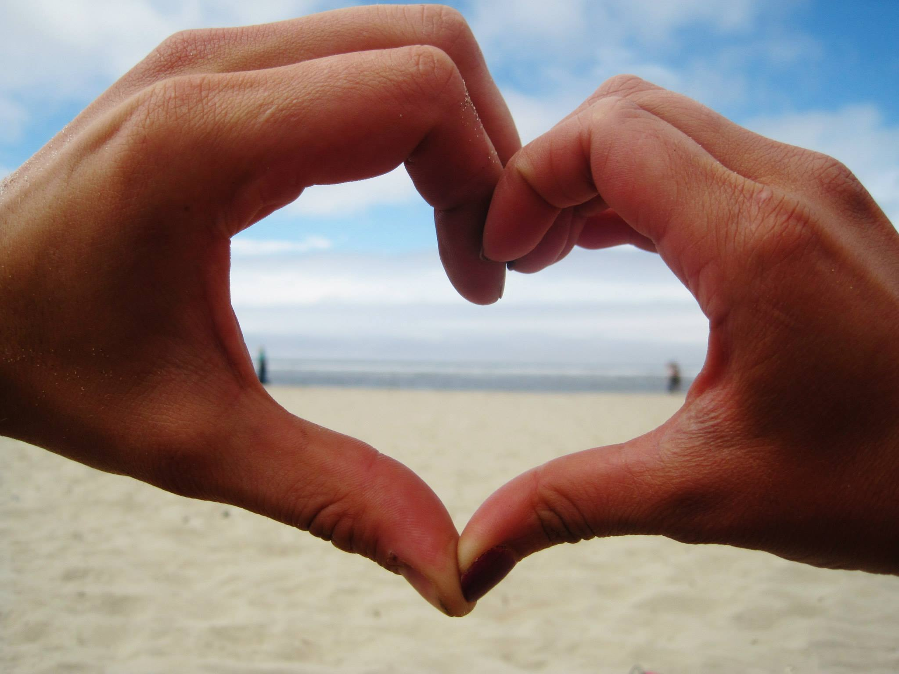
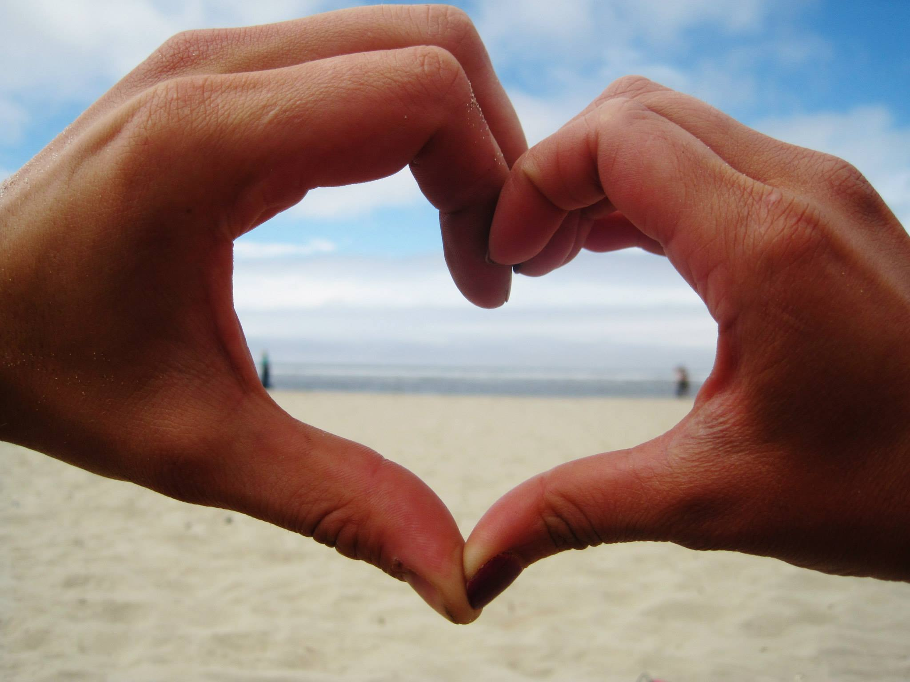

 

Major:
Public Relation
Minor:
Visual Communication Design

I'm a creative, fun loving and humorous girl from the westside of Washington. Traveled from Seattle as a transfer student to attend Eastern Washington University to pursue my education in communication and design.
I enjoy being adventures, traveling, the outdoors, water life and scenic views. I love my supportive family, friends and handsome boyfriend. I'm a passionate girl who loves to learn and challenge herself. I try to push myself outside of my comfort
zone to experience the most that I can.